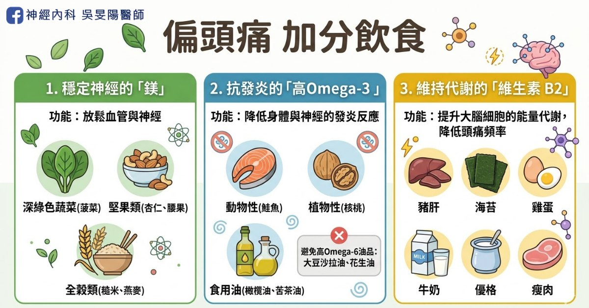
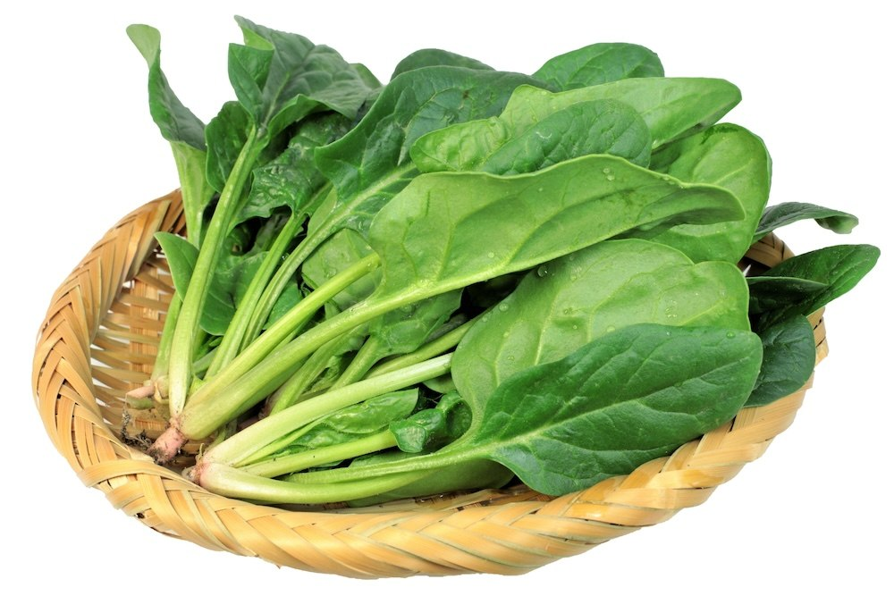
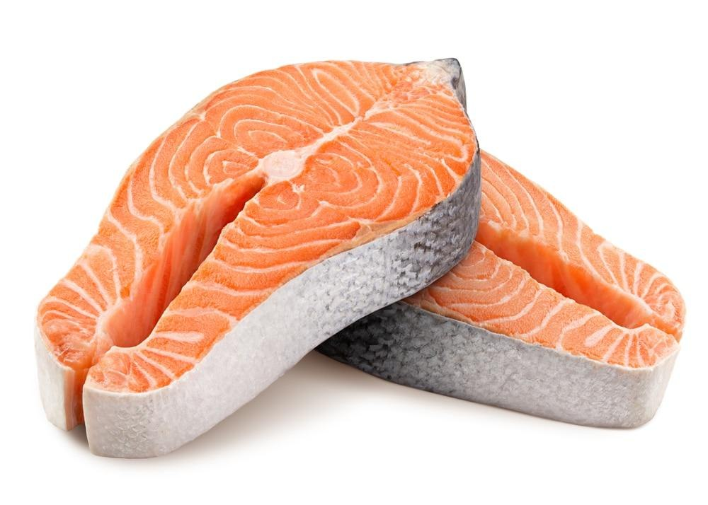
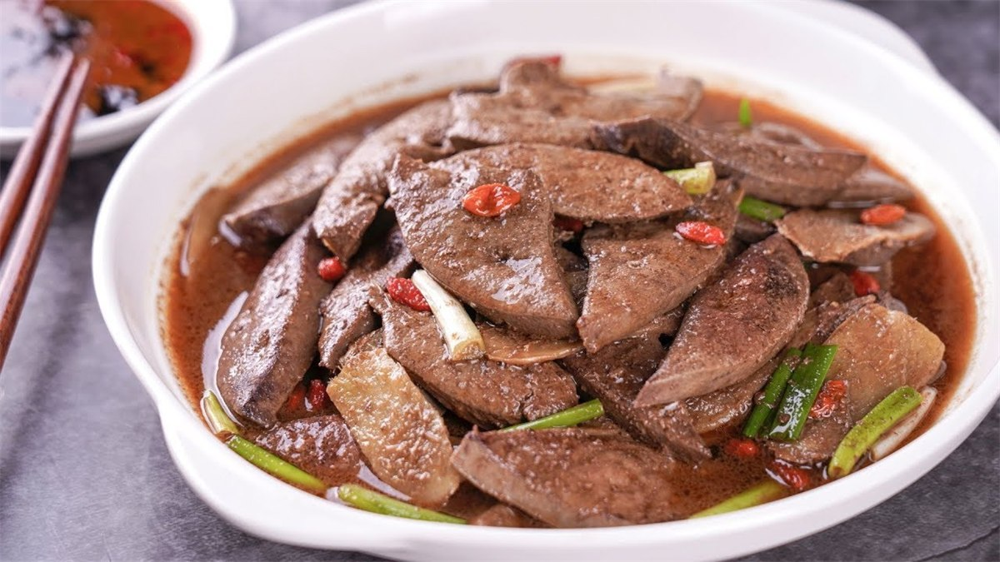
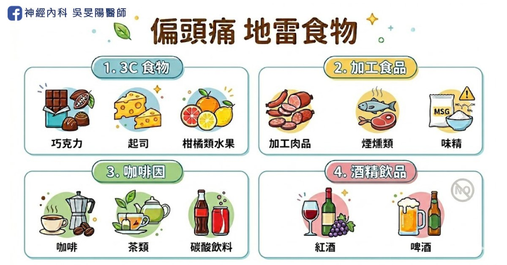
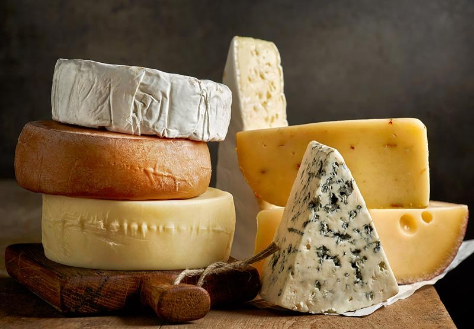
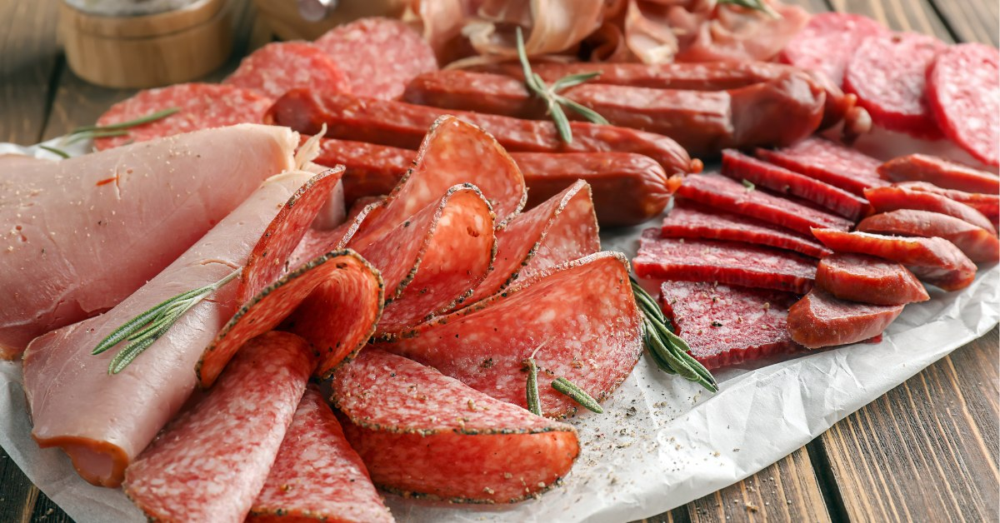

改善偏頭痛，該吃什麼呢？加分飲食 vs 地雷食物清單
偏頭痛治療，往往需要耐心與時間，除了按時服藥，寫頭痛日記之外，病友也常常提問：
「每天吃鮭魚，就能預防頭痛嗎？」
「不能再喝咖啡、吃巧克力了嗎？」
研究與臨床經驗指出，飲食是偏頭痛患者常見的誘發因素之一。雖然不一定是每個人的主因，但調整飲食習慣，確實是偏頭痛管理中值得注意的一環！這篇一次整理給你。
加法飲食│補充適量營養素，改善偏頭痛！

以下 3 種是研究中被認為，對於偏頭痛有幫助的營養素或食物。
1. 鎂（Magnesium）

鎂是天然的神經穩定劑，有助穩定神經與血管，美國神經學會之治療指引曾提及，鎂劑對偏頭痛預防有幫助，後續研究也多數顯示有效，常見食物來源有：
- 深綠色蔬菜：菠菜、地瓜葉、綠花椰菜、青江菜、韭菜
- 堅果類：杏仁、腰果、核桃、夏威夷豆、開心果、榛果
- 全穀類：糙米、燕麥、紫米、蕎麥、小米、藜麥
如需直接補充鎂，建議與醫師討論適合自己的劑型，市面上的鎂補充劑多選用檸檬酸鎂、氧化鎂，常有腹瀉副作用，須留意。
2. 高 Omega-3

選擇食用高 Omega-3、低 Omega-6 脂肪酸的食物，具有抗發炎及保護心血管的功效，能減少頭痛頻率，常見食物來源：
- 動物性：鮭魚、鯖魚、秋刀魚、柳葉魚、大西洋鱈魚、海鱺等深海魚類
- 植物性：核桃、亞麻籽、奇亞籽（素食者適用）
- 食用油：橄欖油、苦茶油。
避免食用大豆沙拉油、棕櫚油、花生油（皆為高 Omega-6 油）。
3. 維生素 B2（核黃素）

核黃素可提升大腦細胞的能量代謝，研究結果顯示，每天食用 400mg 的 B2（核黃素），持續 3 個月可能對改善偏頭痛有效。常見食物來源：
- 肝臟類：豬肝、雞肝、牛肝
- 植物性：乾香菇、紫菜、海苔
- 乳製品：牛奶、優格
- 瘦肉、文蛤、雞蛋（特別是蛋黃）。
400mg 為高劑量的特殊補充，建議與醫師討論用藥，避免和腎疾病或正服用的藥物產生衝突。
市售的維生素 B2 補充錠，高強效約 50~100mg，只能用於一般保健用途。
地雷食物│避免 3C 飲食

根據研究統計，有 15% 患者的偏頭痛發作與特定食物有關，除了 3C 食物，加工食品、咖啡因、紅酒和酒精飲品，也常視為頭痛誘發因子。
1. 3C 食物

容易誘發偏頭痛的 3 類食物，含有「酪胺酸」，會刺激交感神經，造成血管收縮或痙攣，進而引發劇烈的偏頭痛。
- 巧克力 (Chocolate)：尤其是純度較高的黑巧克力，含有 β-苯乙胺 (beta-phenylethylamine)，少數人因過度刺激而引發頭痛。
- 起司 (Cheese)：藍紋起司、莫札瑞拉、帕馬森等起司製品，富含酪胺酸 (Tyramine)，會讓血管擴張收縮，誘發頭痛。
- 柑橘類水果 (Citrus)：柳丁、橘子、檸檬、葡萄柚。
2. 加工食品

加工食品含多種人工添加劑、化學香料或氫化脂肪，是血管擴張的隱形幫兇。
- 加工肉品：香腸、臘肉、培根、火腿、熱狗，含有為了維持肉色而添加的成分亞硝酸鹽。
- 煙燻類：煙燻香腸、煙燻鮭魚
- 代糖飲料（零卡可樂、無糖口香糖）、味精
3. 咖啡因
成年人建議攝取量 <400 mg/天，攝取過量的咖啡因，會引發心悸、焦慮、失眠或頭痛等不良反應，更有成癮的風險，而部分市售的止痛藥含有咖啡因成分，過度使用會導致吃越多，頭越痛。常見的食物來源：
- 茶類：紅茶、綠茶、烏龍茶，以及手搖店的奶茶、抹茶。
- 碳酸與機能飲料：可樂、Redbull、紅牛、魔爪等提神能量飲料。
- 咖啡製品：咖啡凍、提拉米蘇、咖啡口味的餅乾或糖果。
市售的 EVE 止痛藥含有咖啡因，成年人一次 2 顆（80mg）× 3 餐 = 240mg，如再喝一杯中杯美式（200mg），即超過每日建議攝取量！
有喝咖啡提神習慣的人，建議可固定時間、固定份量（早上 1 杯/天），不須立刻戒掉，適量咖啡因是沒問題的。
延伸閱讀：市售止痛藥，為何吃越多越沒效？認識藥物過度使用頭痛
4. 酒精飲品
紅酒中的組織胺、單寧等成分，與部分患者的頭痛發作有關，各類酒精也會擴張腦部血管，除了引起宿醉，也易誘發頭痛。
飲食日記│幫你找出頭痛原因的好幫手
飲食日記，是找出誘發頭痛關鍵的有效方法。透過連續紀錄 2～4 週，可協助你釐清個人的地雷食物，同時避免因過度盲目忌口，而產生心理壓力。使用手機備忘錄或紙本，每次發作時記錄以下 5 項具體內容：
- 頭痛時間與嚴重度：頭痛開始與結束的時間，疼痛指數（1-10 分）。
- 發作前飲食：發作前 24 小時內吃過的食物與飲品，包含零食、咖啡因、水分與點心。
- 睡眠與壓力：前晚的睡眠品質、時數，以及當天是否有壓力事件。
- 其他觸發點：記錄當天的天氣變化、是否長時間空腹。
- 緩解方式：服用何種藥物、休息多久後才獲得改善。
女性可增加紀錄月經週期。
飲食日記，部分與頭痛日記重疊，可合併一同紀錄。
飲食調整│絕對無法取代正規治療
盤點以上，會發現誘發頭痛的地雷食物還不少。飲食調整算是輔助，不能取代正規治療，如果頭痛嚴重或是頻繁發作，仍建議就醫，與醫師討論更關鍵的預防性藥物治療，配合規律運動，與調整生活作息。
文章中所列出的地雷食物，儘管有參考價值，但不代表「吃了都一定會頭痛」，千萬別把這些食物想成毒藥。
雖然偏頭痛和飲食有關連，但因人而異，任何誘發因子，如睡眠不足、壓力、荷爾蒙變化、天氣或飢餓都有可能，畢竟飲食是人生樂趣之一，我不希望因為看了本篇文章，就禁吃可疑食物，這樣生活也太辛苦！
飲食原則│三餐正常吃，比吃什麼還重要！
除了吃什麼食物外，偏頭痛患者更要留意「是否三餐正常吃」。任何不規律的進食，如空腹、延遲用餐、血糖波動，對部分患者來說，比特定食物更容易誘發頭痛。
有些人以為自己是喝咖啡而頭痛，但仔細回想才發現，當天從早忙到晚，只喝一杯咖啡，午餐也沒吃。這時候，真正的兇手不是那杯咖啡，而是「太久沒進食」。
偏頭痛患者宜規律飲食，避免因空腹太久，導致飢餓性頭痛，更可考慮以較小份量、較規律的方式進食（參考自 American Migraine Foundation）
偏頭痛飲食的 3 大重點
一、加分飲食不能替代治療，地雷食物因人而異
有助於改善頭痛的食物，只能當作加分飲食，無法取代正規治療，而個人對於食物的反應不同，因此不是每個地雷食物，都需全部禁止
二、善用飲食日記，協助找出原因
如果嚴格控管飲食，人生可能會瞬間少掉一半樂趣，造成壓力，從而加劇疼痛症狀，因此，建議先使用飲食日記，找出個人地雷食物喔！
三、規律飲食最重要
規律時間進食用餐，不要跳餐、空腹太久或嚴格忌口。
頭痛頻率過高、止痛藥越吃越多，甚至影響生活品質，歡迎到神經內科門診評估治療！
延伸閱讀
頭痛入門必讀
頭痛地圖：痛哪裡找哪裡
偏頭痛病友請進
參考資料
- 2022 台灣頭痛學會民眾衛教手冊
- 2022 台灣偏頭痛預防性治療準則
- 請問偏頭痛的輔助與替代療法有哪些？